01 / ENXERGAR
Projetos vêm primeiro.
Comece pela iniciativa, entenda o estado atual e encontre uma próxima ação. O catálogo conduz a navegação.
Personal workbench · feito para dar contexto
Projetos, evidências e o próximo passo. OL.GG organiza o contexto do seu workspace em uma visão que faz sentido.
Seu trabalho merece uma visão clara. OL.GG reúne projetos, evidências e contexto em uma bancada pessoal de trabalho. Comece pelo que está sendo construído. A visão geral separa projetos, próximos passos e registros de atividade, com a data do retrato sempre visível.
Encontre um projeto pelo nome, tecnologia ou categoria. Abra os detalhes para entender o estado atual, a próxima ação e as evidências disponíveis. A atividade ganhou uma leitura direta. Entregas, pendências e trabalho em curso aparecem sem depender de uma metáfora de jogo.
O contexto fica organizado por assunto. Perfil, conhecimento, processos e carreira têm espaços próprios, com acesso direto pela navegação. Ferramentas continuam com seus nomes e com a origem das medições. O retrato ajuda a revisar o trabalho sem transformar volume em qualidade.
OL.GG. Projetos em primeiro plano. Contexto quando você precisa. Esta demonstração usa dados fictícios, separados do workspace pessoal.
01 / ENXERGAR
Comece pela iniciativa, entenda o estado atual e encontre uma próxima ação. O catálogo conduz a navegação.
02 / ENTENDER
Um resultado precisa de lastro. Evidências e referências ficam junto do projeto, com seus limites explícitos.
03 / DECIDIR
Busca, filtros e assuntos organizados ajudam a chegar ao que importa, sem percorrer uma sequência interminável de painéis.
Uma interface, cinco áreas de trabalho
Explore o catálogo. Abra um projeto. Consulte a evidência e o contexto da decisão. Cada tela tem seu lugar.
01 VISÃO GERAL
Uma seleção do catálogo divide espaço com evidências registradas e próximos passos. A data do snapshot fica visível: esta é uma leitura do contexto coletado, não um painel em tempo real.
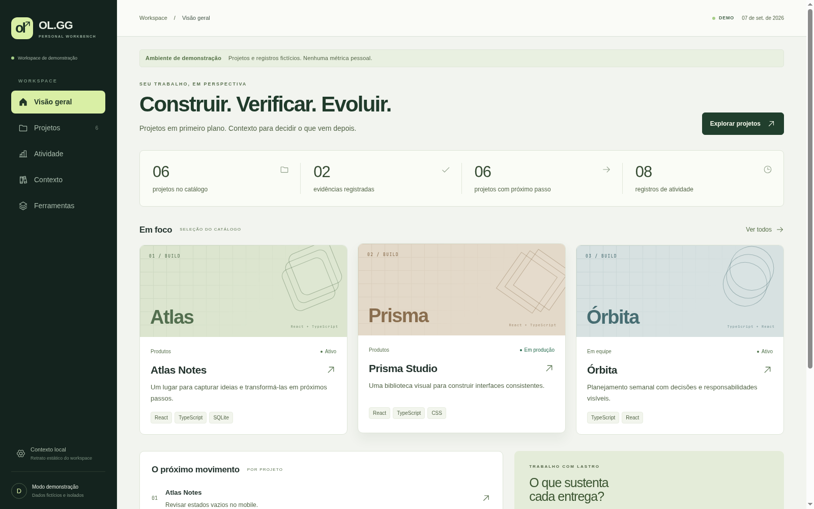
02 PROJETOS
Busque por nome, tecnologia ou próxima ação. Combine categoria e estado, ordene por nome e limpe o recorte quando precisar. O detalhe preserva os filtros na volta; a URL guarda onde você está.
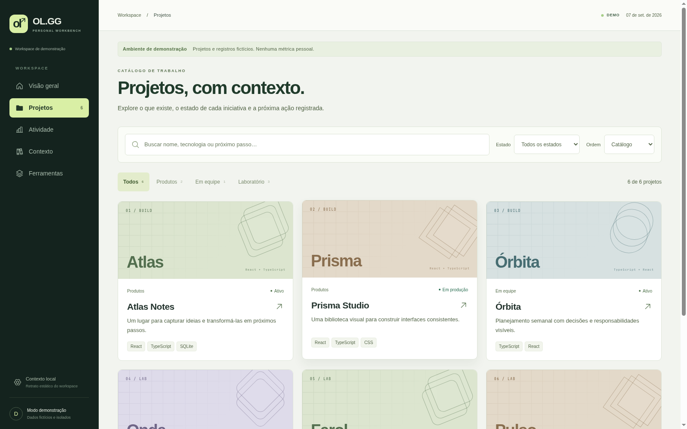
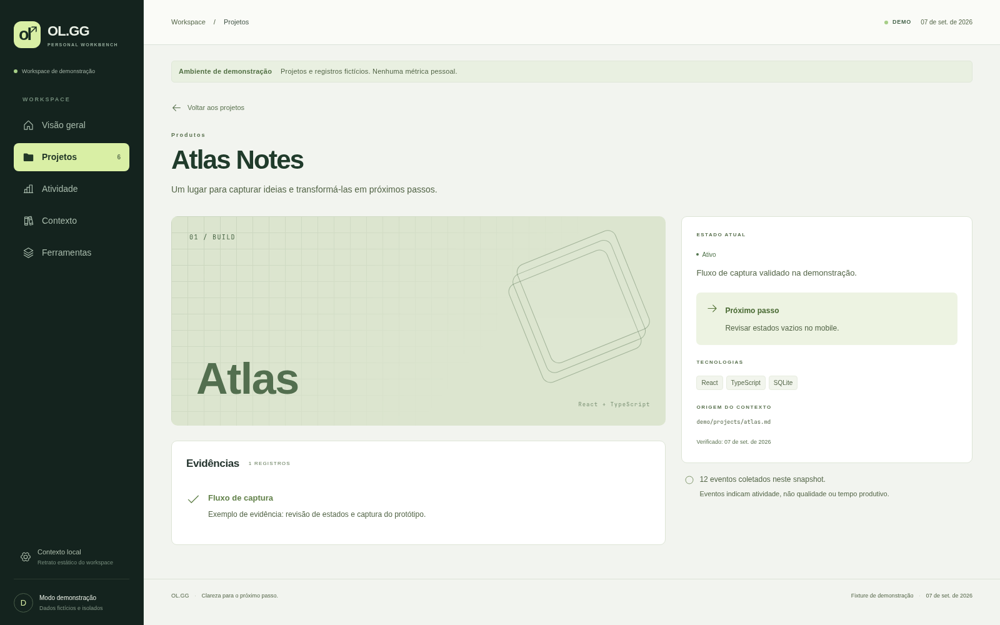
03 ATIVIDADE
Feito, aberto e em curso. Cada registro conecta um projeto a um dia, sem depender de placar, vitória ou derrota para explicar o que aconteceu. Volume de atividade continua separado de qualidade.
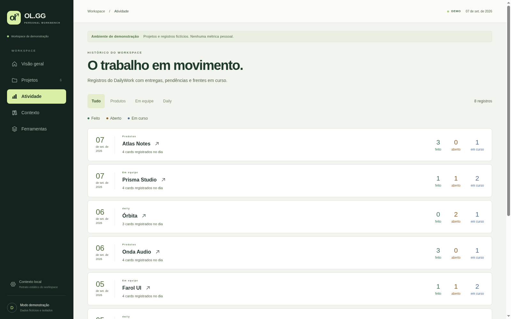
04 CONTEXTO
Perfil, conhecimento, processos, carreira e fontes têm navegação própria. Os blocos expandem sob demanda. Conteúdo pessoal permanece no workspace interno; estas capturas usam apenas dados fictícios.
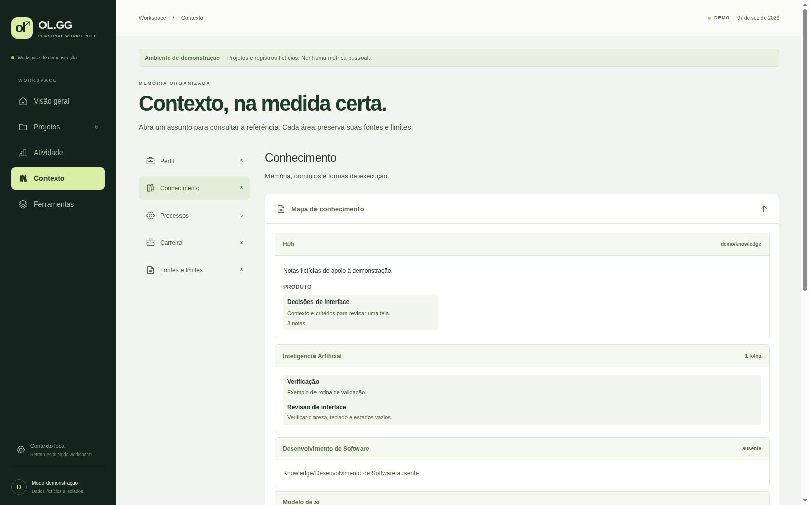
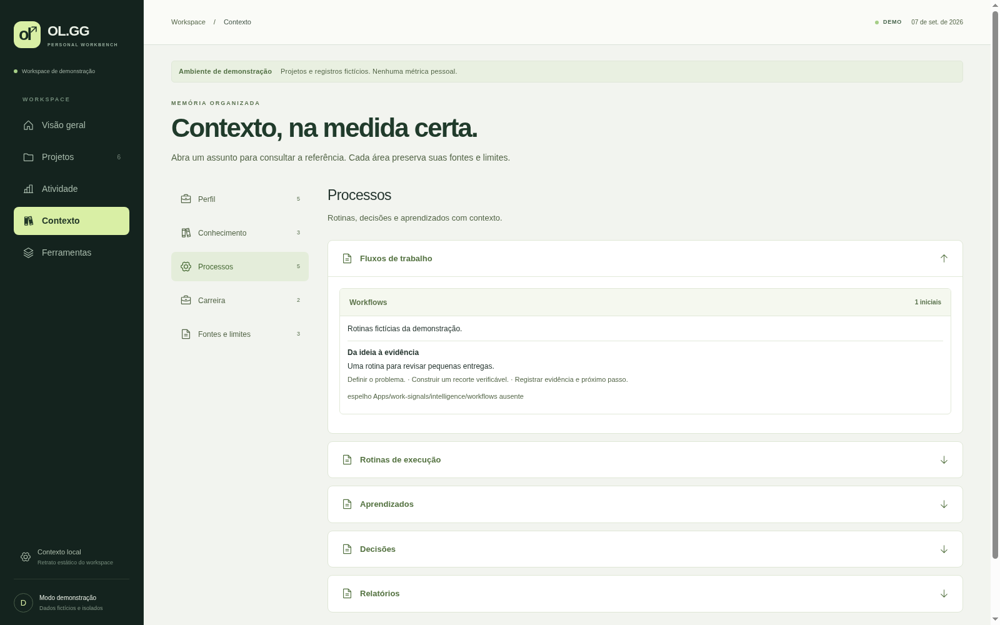
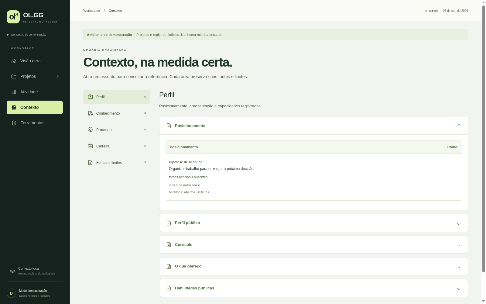
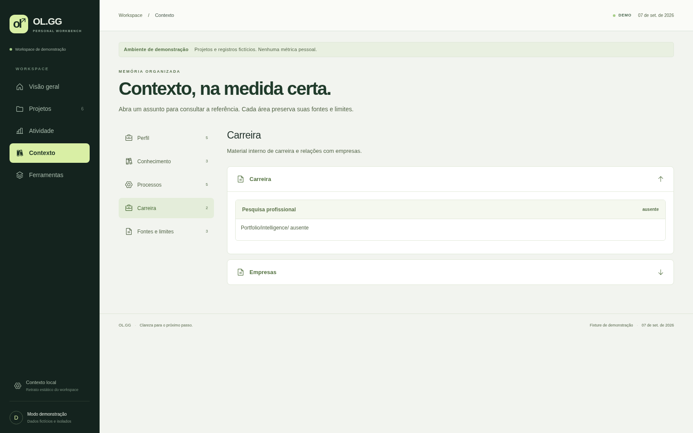
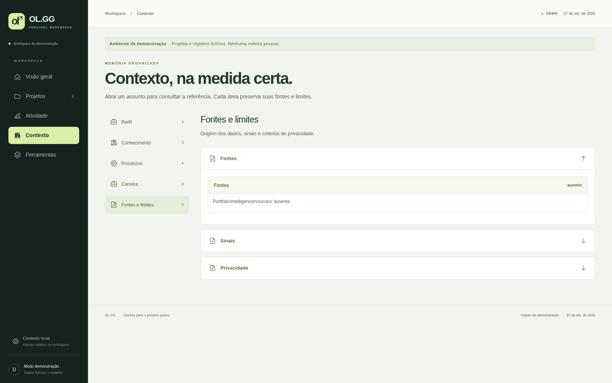
05 FERRAMENTAS
Harnesses mostram os registros disponíveis e o método da coleta. Span de sessão não é tempo produtivo; medição ausente não vira zero. A stack agrupa tecnologias pelos usos documentados no catálogo.
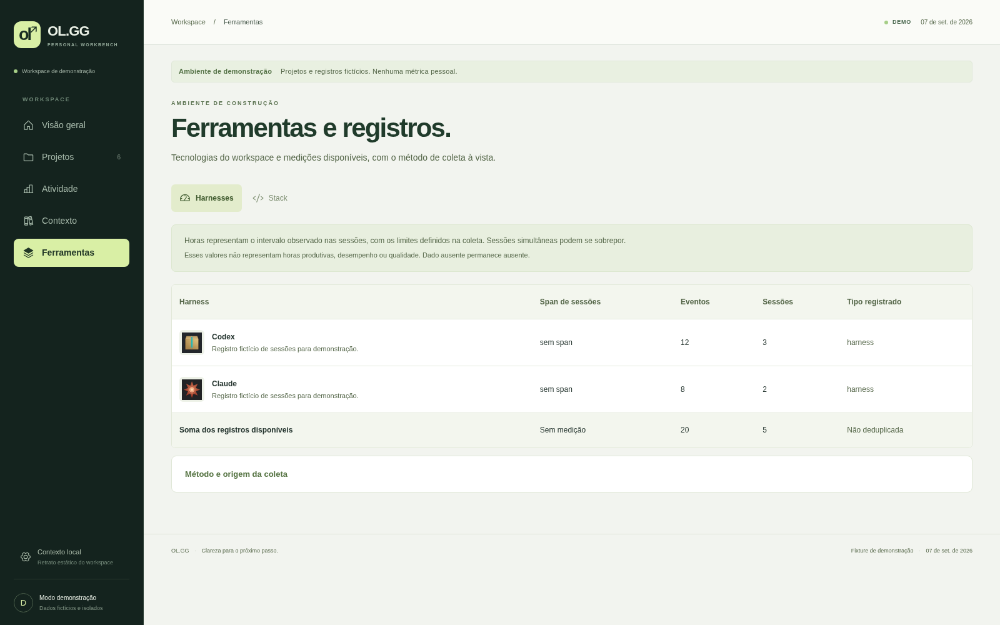
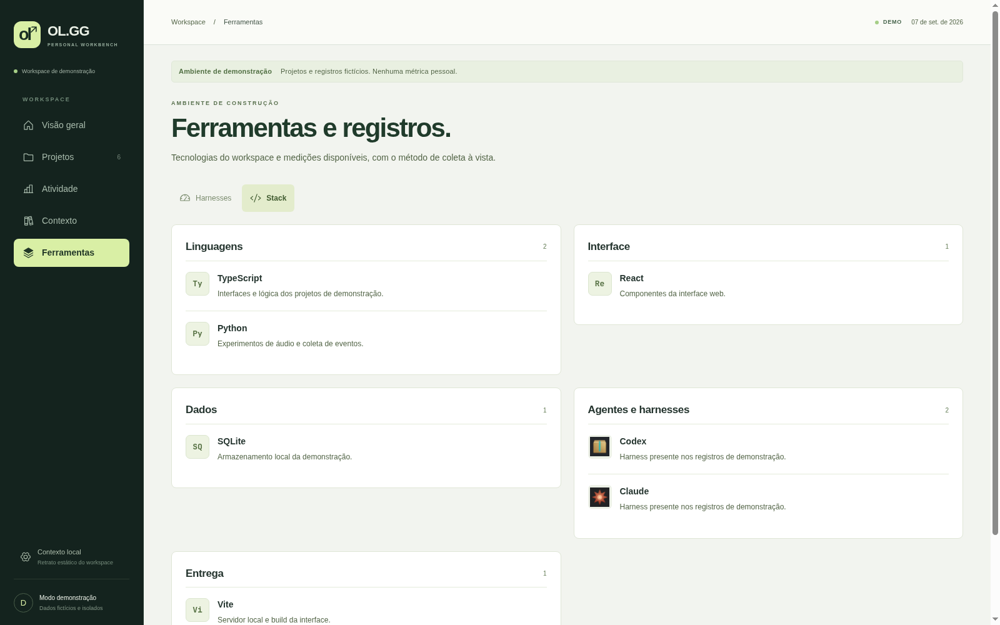
Também cabe no seu ritmo
O catálogo vira uma coluna. A navegação ganha um menu compacto, e os harnesses passam a cartões com todos os dados visíveis.
Interface conferida em 390 × 844 px.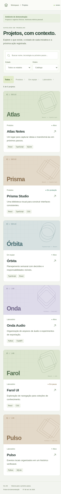
Medido nesta versão
Contagens da interface e da verificação de 7 de setembro de 2026. Nenhum indicador de desempenho profissional.
Três produtos, funções complementares
O contexto muda conforme a pergunta: organizar o dia, revisar o trabalho ou apresentar o portfólio.
| Produto | Pergunta principal | Papel no conjunto |
|---|---|---|
| DailyWork ↗ | O que precisa acontecer hoje? | Organizar os dias, os cards e a execução. |
| OL.GG | Qual é o contexto deste trabalho? | Revisar projetos, evidências, atividade e referências internas. |
| LucasOL ↗ | Como apresentar o que foi construído? | Dar forma pública ao portfólio e aos projetos selecionados. |
Comparação funcional em 07/09/2026, baseada nos READMEs locais dos três produtos e na interface revisada. Consulte as notas de produto e verificação.
No seu ambiente local
OL.GG usa um retrato dos dados do workspace. Quem já tem acesso ao repositório pode abrir a interface local ou explorar a fixture de demonstração separada.
NO DIRETÓRIO OL.GG DO CHECKOUTnpm ci
npm run dev
# Dados fictícios para explorar a interface
npm run dev -- --mode demo
Servidor local padrão: localhost:4546. O modo demo seleciona fontes fictícias no build. A publicação desta página contém apenas a vitrine e suas mídias; o workspace pessoal não é um serviço público.
OL.GG / Personal workbench